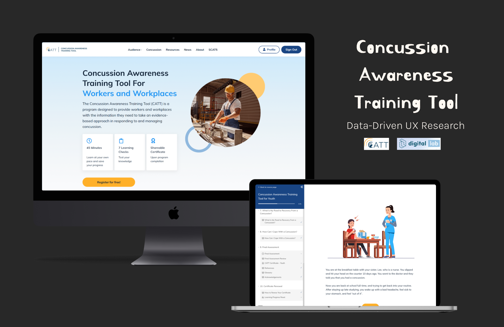
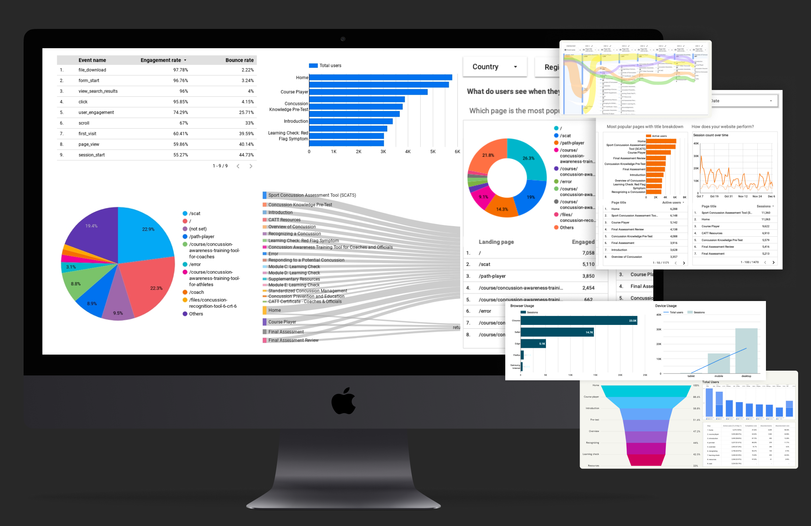
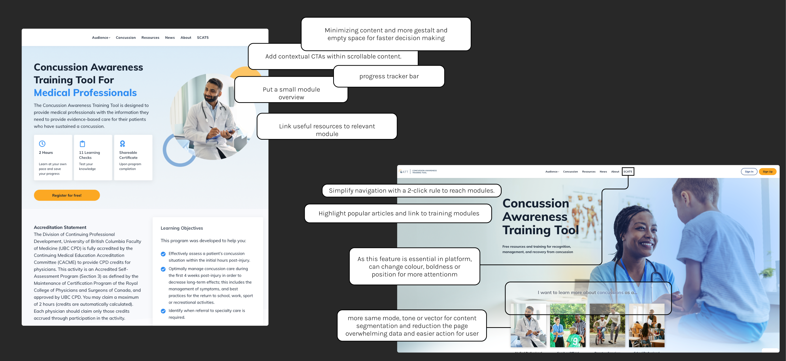
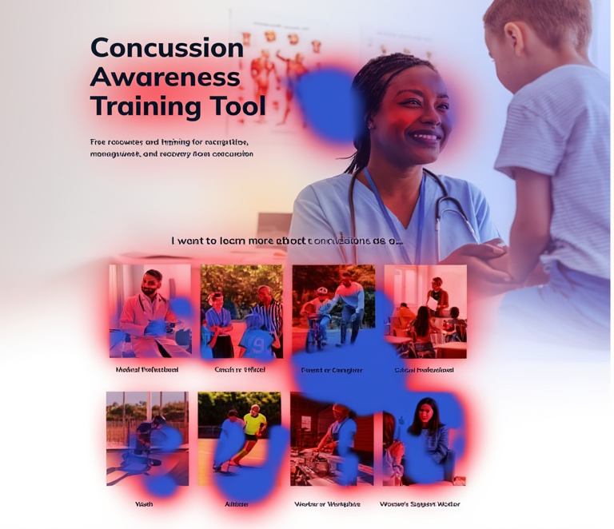
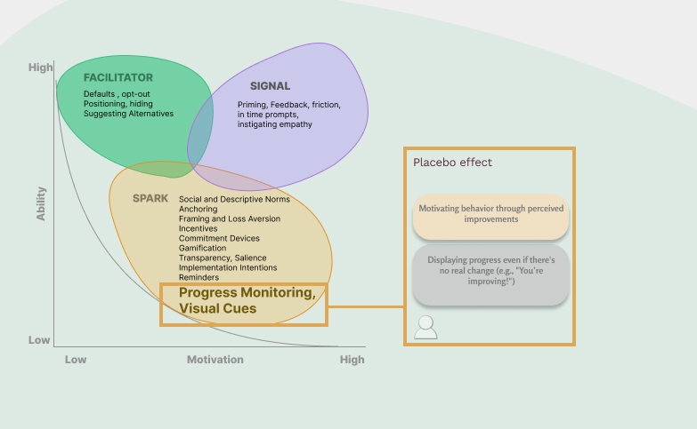
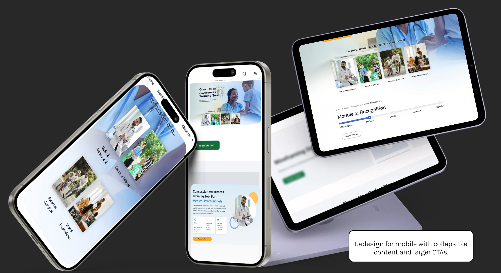

CATT: From Data
to Direction
A data-driven UX research strategy for improving engagement and module completion in a national health education platform.
Project at a Glance
The Challenge
Despite consistently strong traffic, module completion was critically low. The platform informed users — but failed to guide or motivate them to finish.
Analytics revealed a clear mismatch between intended and actual user journeys, pointing to structural UX failures rather than content quality issues.
Planning
Research
Data was scattered across platforms — first step was gathering, cleaning, and unifying it before any analysis could begin.
Metrics tracked

Synthesis of Findings
Main personas identified
Core UX frictions


Thematic Insights
| Theme | Design Implication |
|---|---|
|
A · Access Information Architecture |
Simplify IA and surface training within 2 clicks. Role-based entry points cut cognitive load and route users directly to relevant modules. |
|
B · Continuity Navigation & Recovery |
Fix broken paths, add breadcrumbs, improve recovery flows. Every page needs a way back and a way forward. |
|
C · Motivation Engagement Design |
Progress indicators, milestones, and contextual CTAs embedded in content. Visible momentum converts passive readers into active learners. |


Design Direction
Before & After — Key Screen Improvements
4 critical pain points identified · 3 design directions tested · navigation & completion flow improved
